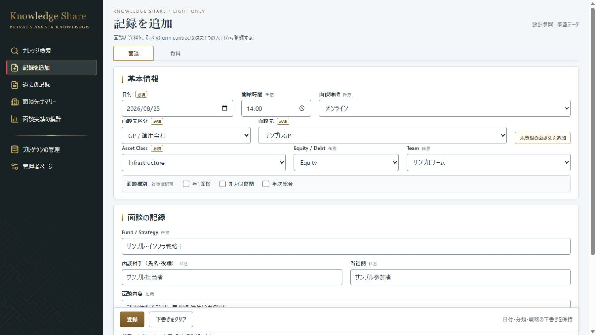
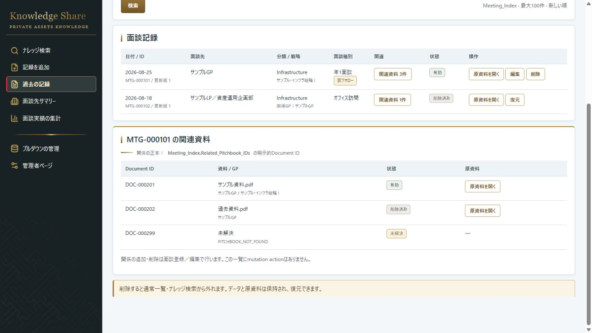

CODEX-09 baseline · 記録を追加

面談/資料の旧入口と既存Light form
CODEX-10 implementation · 記録を追加

記録種別、親Meeting_ID first、任意/必須file policy
CODEX-09 baseline · 過去の記録

旧relationship-oriented Past Records
CODEX-10 implementation · 過去の記録

一つのrecord list、detail内related files、unlink semantics